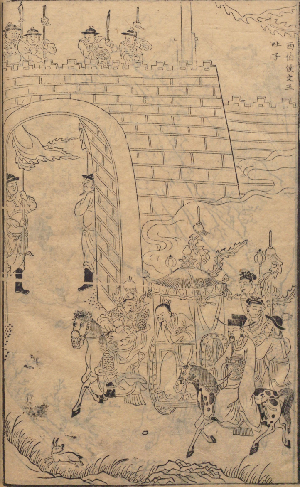

Illustrations of Chapter 21 to Chapter 30
Index
Prev.
Chapter 21: King Wen Escapes through the Five Passes (文王夸官逃五关)

Chapter 22: King Wen Vomits out the Flesh of his Son (西伯侯文王吐子)
Chapter 23: King Wen Dreams of the Flying Bear (文王夜梦飞熊兆)
Chapter 24: King Wen Takes Ziya into his Service at Wei River (渭水文王聘子牙)
Chapter 25: Su Daji Invites her Fellow Demons to a Banquet (苏妲己请妖赴宴)
Chapter 26: Daji Kills Bi Gan with a Cunning Plot (妲己设计害比干)
Chapter 27: Grand Tutor Wen Returns with his Army and Makes Ten Proposals (太师回兵陈十策)
Chapter 28: Ziya Conquers Chong Houhu with his Army (子牙兵伐崇侯虎)
Chapter 29: Houhu was slain: King Wen Entrusts his Son to Ziya (斩侯虎文王托孤)
Chapter 30: Zhou Ji Provokes Lord Wucheng into Rebelling (周记激反武成王)